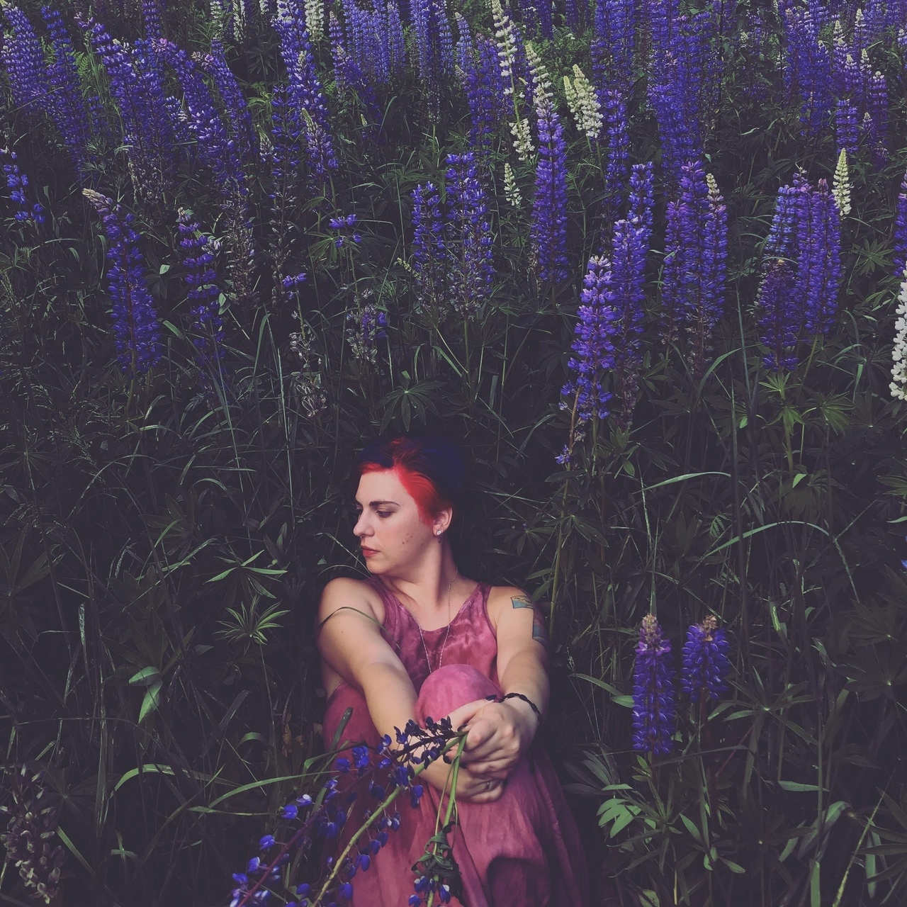
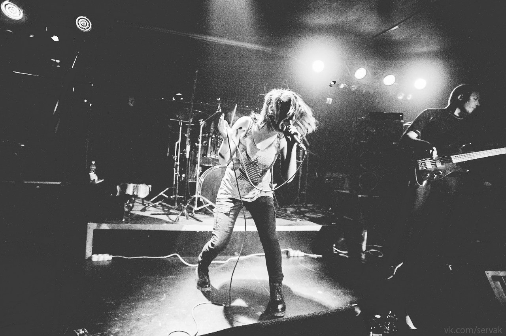
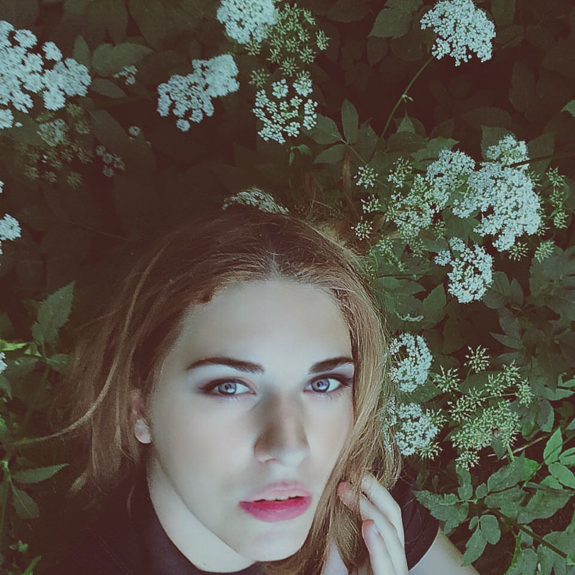
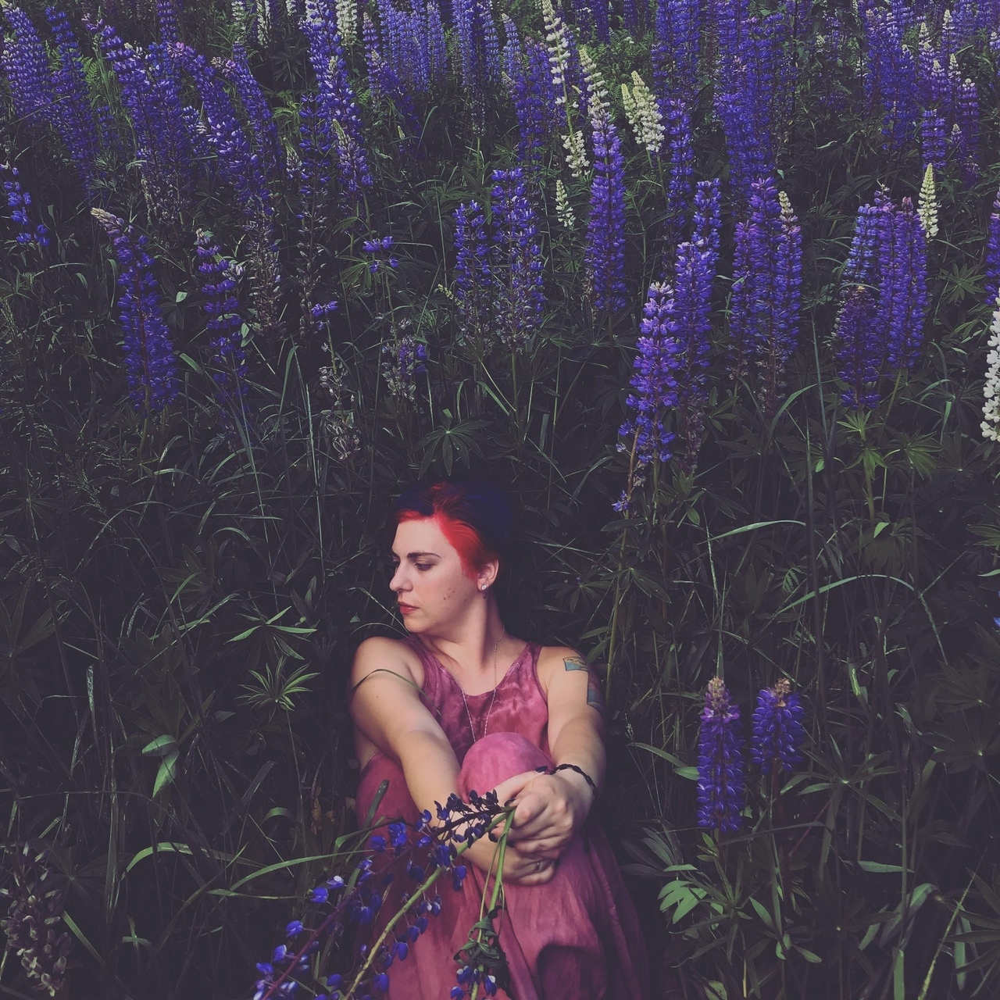
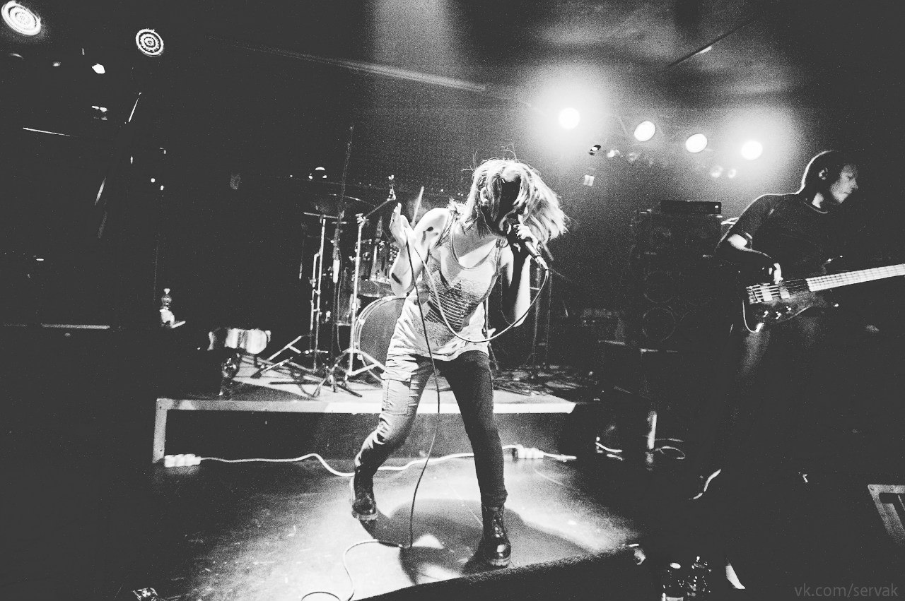
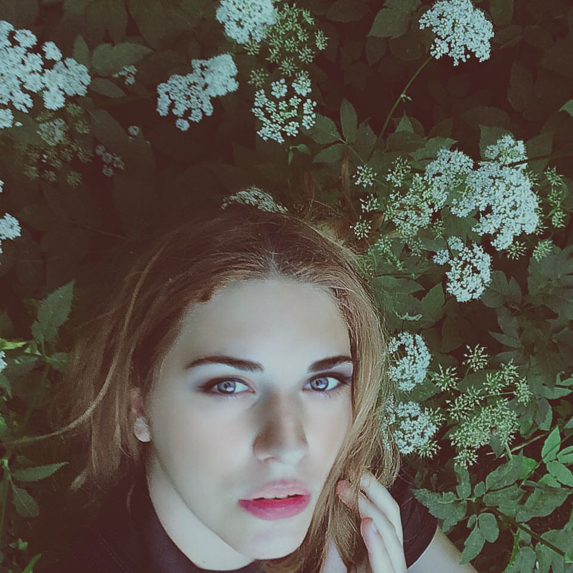

Главная
Доброго времени суток! Я очень рада, что Вы посетили мою страничку! Здесь Вы узнаете немного обо мне.
  
Доброго времени суток! Я очень рада, что Вы посетили мою страничку! Здесь Вы узнаете немного обо мне.
  
Я родилась 25 июня 1993 года в столице Черноземья - Воронеже. Росла очень активным и любознательным ребенком. В первый класс я пошла в 2000 году. Это была не обычная школа. Это была гимназия №7. Славные были времена. Училась я в гуманитарном классе, так как математика никак не шла в голову. Но и зато я была очень активна во всяких школьных мероприятиях. Танцы, песни, актерские сценки - все это было мне намного интереснее. В 2009 году я твердо решила петь. И не просто петь, а петь в рок-группе! Ведь в 2007 году, как и положено было всем подросткам того времени, я была привержена субкультуре, а именно готы. После долгих поисков рок-групп Воронежа и нескольких прослушиваний, меня взяли в рок-группу под названием "DIOXEED", которая играла альтернативный рок. Таким образом я протусила в этой группе 10 лет. Параллельно конечно были и другие проекты. в 2011 году я поступила в Воронежский Государственный Сельскохозяйственный Университет имени Императора ПетраI на факультет ветеринарии. В последующем я получила специализацию эпизоотолог/паразитолог. Изучила курсы УЗИ. Работала в ветеринарной клинике, из которой тоже наберется много интересных историй. Вышла замуж. В 2016 году я закончила университет и родила чудесного сына. После вместе с семьей я переехала в Санкт-Петербург. Много чего я еще могу рассказать, но в целом пусть будет написано так. Некоторые мои увлечения: